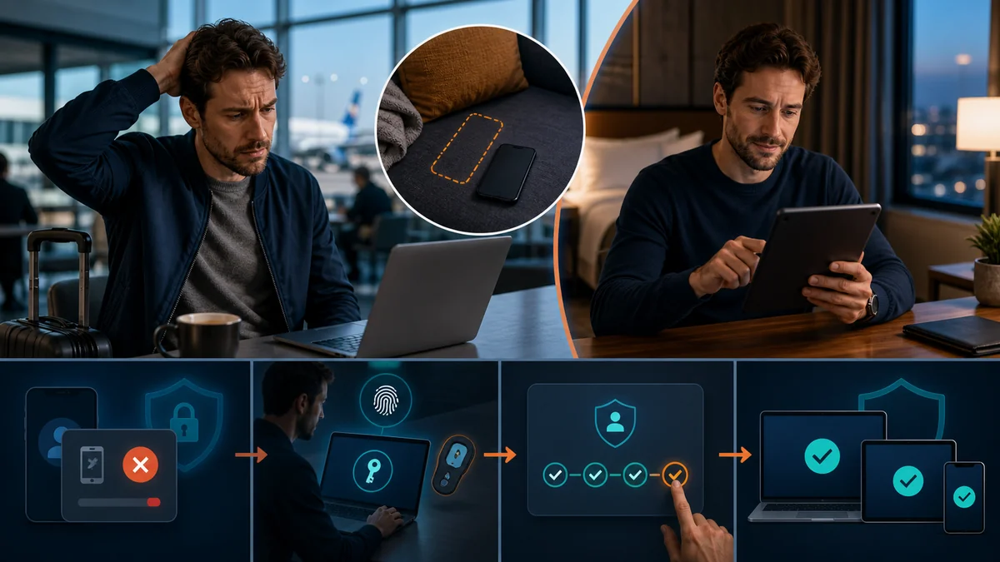
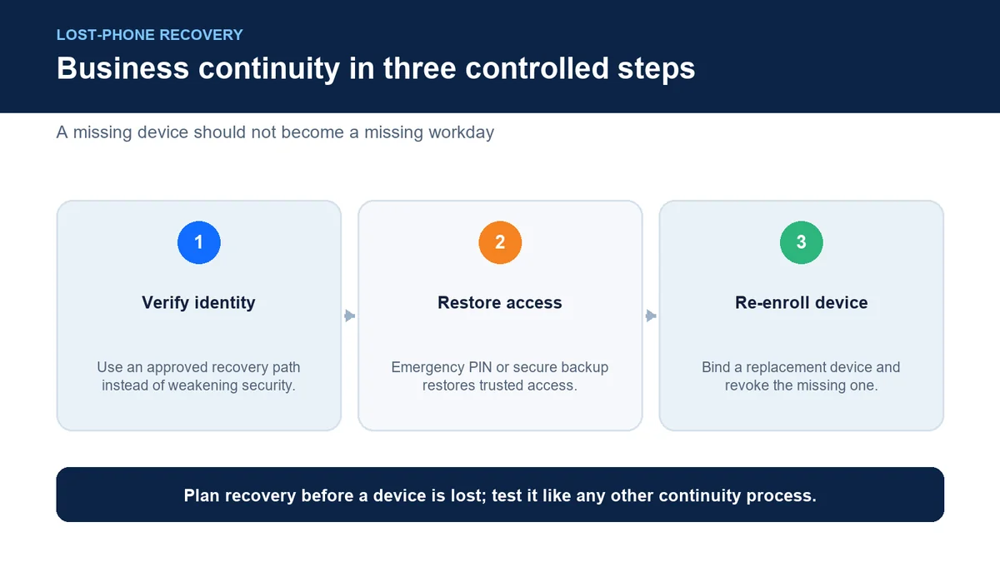
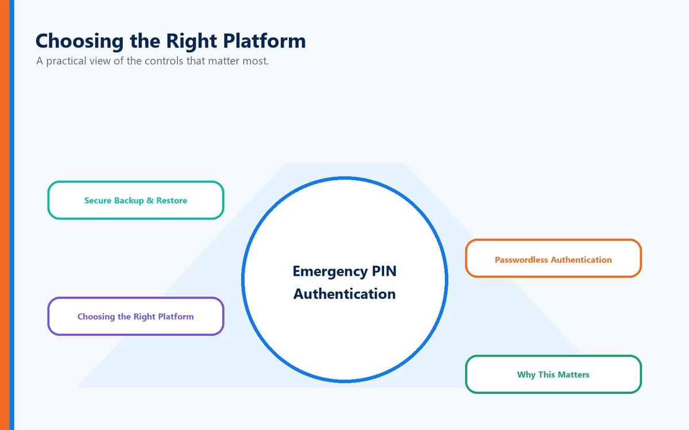

For many organizations, smartphones have become the cornerstone of modern authentication.
Employees use them to receive authentication codes, approve login requests, access password managers, and verify their identity throughout the workday.
But what happens when that phone disappears?
Whether it's lost, stolen, damaged, or simply left at home, many employees immediately worry about one thing:
"Am I locked out of my business?"
With many traditional Multi-Factor Authentication (MFA) solutions, the answer is often yes—at least temporarily.
Employees may spend hours contacting IT, replacing devices, reinstalling authenticator applications, and re-enrolling every business account.
In some organizations, recovery can take an entire day.
Modern passwordless authentication should never allow a missing phone to become a business interruption.
It should be designed for resilience from the very beginning.
What Is Full Duplex Authentication® (FDA)?
Full Duplex Authentication® (FDA) is the patented authentication technology powering PasswordFree®, Identité's Software-as-a-Service (SaaS) authentication platform, and NoPass™, its enterprise Platform-as-a-Service (PaaS) solution for organizations requiring Active Directory, Microsoft Entra ID, Microsoft 365, Azure integration, or on-premises deployment.
Unlike traditional MFA, FDA verifies both the user and the trusted device through a unified, passwordless authentication process. Authentication powered by FDA is designed not only to prevent unauthorized access but also to ensure authorized users can quickly recover from lost or replaced devices through capabilities such as Emergency PIN Authentication and Backup & Restore.
The Real Problem Isn't Losing the Phone

It's losing productivity.
Traditional MFA often ties authentication to a single mobile device.
That device may contain:
Authenticator applications
SMS verification
Push notifications
Password managers
Recovery approvals
Lose that phone and work often stops.
The result is:
Missed meetings
Delayed customer service
Lost productivity
Help desk overload
Employee frustration
Ironically, security designed to protect the business can end up preventing employees from doing their jobs.
Modern Authentication Should Be Built for Business Continuity

Organizations invest in disaster recovery for servers.
They invest in redundancy for networks.
Authentication deserves the same philosophy.
Rather than assuming a trusted phone will always be available, authentication powered by Full Duplex Authentication® is designed around operational resilience.
Three capabilities work together to keep employees productive.
1. Emergency PIN Authentication
If a trusted phone becomes temporarily unavailable, organizations can permit authorized users to authenticate using a secure Emergency PIN.
The PIN is not intended to replace passwordless authentication.
Instead, it serves as a controlled continuity mechanism that allows employees to continue working while a replacement device is obtained.
No unnecessary downtime.
No waiting for IT simply to read email.
No lost workday because a phone battery died.
2. Secure Backup & Restore
Perhaps the biggest differentiator is Backup & Restore.
Traditional MFA frequently requires users to rebuild their authentication profile from scratch.
They must:
Install new authenticator software
Re-register every application
Reconfigure authentication
Contact IT repeatedly
Authentication powered by FDA eliminates much of this process.
Organizations can securely back up authentication profiles to either:
Secure cloud storage
The corporate network
When a replacement phone becomes available, users restore their authentication profile.
Most users can be fully operational again in less than two minutes.
Instead of rebuilding authentication...
They simply continue working.
3. Passwordless Authentication
Passwords remain one of cybersecurity's weakest links.
By removing password dependency altogether, authentication powered by FDA reduces:
Password resets
Credential theft
Phishing attacks
Help desk tickets
User frustration
Recovery becomes dramatically simpler because authentication is no longer built around something users must remember.
Choosing the Right Platform

This is also a good place to distinguish your products:
PasswordFree®
Organizations seeking rapid cloud deployment often choose PasswordFree®, Identité's SaaS platform.
Ideal for:
SMBs
Distributed workforces
Organizations wanting minimal infrastructure
NoPass™
Enterprises frequently require:
Active Directory integration
Microsoft Entra ID
Microsoft 365
Azure
On-premises deployment
Customer-controlled cloud environments
These organizations typically choose NoPass™, powered by Full Duplex Authentication®.
Banks, financial institutions, healthcare providers, government agencies, and other highly regulated organizations often prefer this deployment model because it allows them to maintain direct control over authentication infrastructure and sensitive identity data.
Why This Matters
Authentication shouldn't merely stop attackers.
It should keep legitimate employees working.
That's the philosophy behind PasswordFree® and NoPass™.
Instead of asking:
"How do we authenticate users?"
Identité asks:
"How do we authenticate users securely without interrupting the business?"
That's a fundamentally different design philosophy.
Final Thoughts
The true measure of an authentication platform isn't what happens when everything works perfectly.
It's what happens when something goes wrong.
Phones get lost.
Devices fail.
Employees travel.
Batteries die.
Modern authentication should anticipate those realities—not create new obstacles.
Powered by patented Full Duplex Authentication®, PasswordFree® and NoPass™ are designed to keep organizations secure and productive through passwordless authentication, Emergency PIN Authentication, and Backup & Restore, allowing users to restore their authentication profile in less than two minutes.
Because security should never come at the expense of business continuity.